Практика · журнал «ДентАрт» 2019 №1
Безпрепарувальна превентивна реабілітація зубів при стиранні у вільній техніці за восковою моделлю
NO-PREP INTERCEPTIVE REHABILITATION OF TOOTH WEAR USING A FREE-HAND TECHNIQUE DRIVEN BY FUNCTIONAL WAX-UP
Дідьє Дічі,кафедра карієсології і ендодонтії Школи стоматології Женевського університету, кафедра загальної терапії Університету Кейст Вестерн (м. Клівленд, Огайо, США), клініка The Geneva Smile Center (м. Женева, Швейцарія)
Сучасний підхід у лікуванні стирання зубів полягає в припиненні його прогресування без видалення значних обсягів зубних тканин. Часті невдачі при традиційному протезуванні та клінічні дослідження підтверджують перевагу консервативного адгезивного композитного відновлення для лікування легких і помірних форм стирання та ерозії зубів. У статті наведено приклад такого відновлення.
Обґрунтування лікування
Значні абразія (атриція) та ерозія, два найбільш поширені стани, що призводять до ушкодження твердих тканин зубів, зустрічаються у дедалі більшої кількості пацієнтів.1,2 Обидві проблеми стають усе актуальнішими в стоматології, тому що у таких пацієнтів, особливо за наявності тяжкої парафункції, успішне і постійне усунення етіології можливе лише в окремих випадках.3-5 Тому потрібен безперервний моніторинг для контролю пов’язаних патологій.
Найчастіше причинами ерозій є незбалансовані аліментарні звички з частим уживанням кислої їжі або фруктових, газованих напоїв, фруктових соків і оцту, а також підвищене вироблення кислоти самим організмом, наприклад, при булімії, кислотному рефлюксі, грижі стравохідного отвору діафрагми. Недостатність слиновиділення або буферних властивостей слини і в цілому зміна її складу можуть бути наслідком різних захворювань, застосування медикаментозних засобів чи вікових змін і є додатковими етіологічними факторами.6-9 Що ж до абразії, денного і нічного бруксизму – це дві різні форми парафункцій, які можуть серйозно вплинути на цілісність зубних тканин.4,5 Тому профілактичні та реставраційні заходи обов’язкові для корекції і запобігання подальшому прогресуванню деструкції зубів і реставрацій. Важливим клінічним спостереженням є той факт, що значна кількість пацієнтів, які страждають від втрати твердих тканин зубів, мають комбіновану етіологію, що ускладнює для стоматологічної команди процес визначення мультифакторного профілактичного і реставраційного підходу.1-9
Наслідки абразії та ерозії для здоров’я різноманітні і включають втрату емалі з прогресуючим оголенням великих зон дентину, що значно змінює оклюзійну, вестибулярну і лінгвальну анатомію зуба, а також має біологічні наслідки. До об’єктивних симптомів і скарг пацієнтів можна віднести вкорочення зубів, дисколорити, зміщення зубів, підвищену чутливість, а також підвищений ризик утворення каріозних порожнин і ранню втрату крайового прилягання реставрацій. Значний вплив стирання зубів на оклюзію, функцію та естетику змушує пацієнта звертатися до фахівця за консультацією і втручаннями. Складність біомеханічних порушень веде за собою низку лікувальних заходів, від профілактики до тотальної реабілітації, які потребують залучення різних фахівців. Проміжні стадії (від незначного до середнього ступеня ерозії і абразії) вимагають інших клінічних маніпуляцій, наприклад адгезивних і часткових реставрацій. У цій статті йдеться про клінічну концепцію застосування різних реставраційних втручань та їх здатність призупинити руйнування структур зуба.
Комплексний підхід у лікуванні
Метою сучасного підходу в лікуванні стирання зубів є припинення його прогресування до моменту появи необхідності в тотальній ортопедичній реабілітації, яка потребує додаткового видалення значного обсягу зубних структур з потенційним виникненням біологічних ускладнень10,11 і досить слабкою біомеханічною доцільністю. Такий підхід включає три етапи:
- комплексне етіологічне клінічне обстеження, що включає аналіз дієти та визначення загальних/медичних і місцевих факторів ризику;
- складання та виконання плану лікування, включаючи коректне функціональне і естетичне воскове моделювання, з визначенням нової лінії усмішки та анатомії зубів, що згодом переноситься у ротову порожнину в комбінації прямих і непрямих реставрацій;
- програма збереження, яка передбачає носіння захисної нічної капи і, можливо, лагодження або заміну реставрацій у середньотерміновій чи довготерміновій перспективі.
Можливі варіанти реставрації – прямі часткові композитні реставрації, непрямі часткові композитні або керамічні реставрації та непрямі цільнокерамічні реставрації. З огляду на драматичні приклади невдач, які спостерігаються за традиційного протезування,10,11 консервативніші підходи, такі як часткові прямі і непрямі реставрації, очевидно, мають незаперечні переваги і багатообіцяючі результати при лікуванні тяжкої абразії та ерозії.12-14
Концепція Далла і контроль вертикального оклюзійного співвідношення
Ідея підвищення вертикального співвідношення оклюзії (ВСО) з метою лікування чи реставрації зубів у пацієнтів зі стиранням зубів була описана і застосовувалася вже протягом багатьох років; одним з перших клініцистів, які просували цю техніку, був Далл, який опублікував багато статей на цю тему. Його підхід полягав у застосуванні металевого апарата для підняття прикусу, що у свою чергу дозволяло зубам пасивно зміщуватися до відновлення оклюзійних контактів і створювало простір для реставрації зубів, стабілізованих апаратом.15 Передбачається, що зміщення зубів відбувається при комбінованому суправисуванні оклюзійно вільних зубів одночасно з альвеолярним подовженням і забиванням зубів, що мають контакти. Було засвідчено, що цей феномен може виникати у значної частини пацієнтів при лікуванні із застосуванням цієї концепції,16 і результати такого лікування були підтверджені кількома недавніми роботами та оглядовими статтями.15-19 Збільшення ВСО є ключовим параметром для відновлення і профілактики наслідків патологічного стирання і ерозії.20-25 Пасивне висування, яке супроводжує безперервне руйнування і втрату тканин, значно обмежує простір, необхідний для реставрацій, які через їх мінімальну товщину будуть дуже крихкими або вимагатимуть надлишкового видалення структур зуба. Нещодавно опубліковані клінічні випадки значною мірою підтвердили такий підхід до лікування.23-25
Схема лікування і варіанти реставрації
Вибір оптимального варіанту реставрації зазвичай ґрунтується на стані зуба (наявність порожнини, реставрації, вітальний чи невітальний зуб), а також на кількості і локалізації втрачених тканин. Це означає, що слід враховувати різні варіанти реставрацій і що план лікування строго індивідуальний (зубоспецифічний). Терапевтична схема (рис. 1) логічно орієнтована на відновлення передусім коректної довжини центральних різців і різцевого ведення, яке визначає згодом нове вертикальне співвідношення оклюзії. Правильні анатомія і функція переднього зуба сформовані у відповідності з об’єктивними естетичними принципами,26 існуючою і колишньою анатомією зуба, а також функціональними і фонетичними компонентами. Перший крок веде за собою створення діагностичних моделей у вигляді часткового (в разі помірної втрати твердих тканин у бічній ділянці) або повного воскового моделювання (у разі значного генералізованого стирання зубів та ерозій).
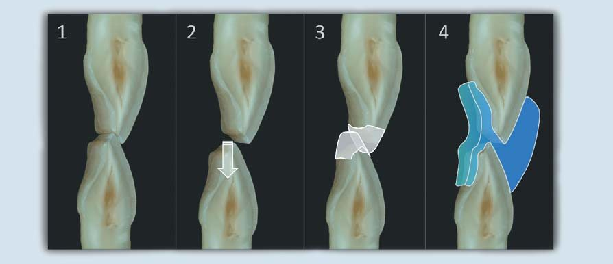

Застосування композиту у прямій техніці
Варіант прямої композитної реставрації логічно рекомендований для всіх форм втрати або деструкції твердих тканин зубів помірного та середнього ступеня.13-16 Серед переваг прямої композитної реставрації – її висококонсервативний підхід, можливість заміни або зміни форми невеликих зон зуба, можливість ремонту, спрощена заміна і відносно невелика вартість (фото 1). І навпаки, вона більш чутлива в роботі, іноді з утворенням тонких шарів матеріалу на деяких поверхнях, що піддає їх механічному перевантаженню. При використанні техніки скульптурування правильна анатомія може бути створена також за допомогою прямої техніки, що вимагає вибору високонаповненого матеріалу щільної консистенції.27-29
У випадку, що ілюструє цей метод лікування (фото 1-3), використовувався високонаповнений гомогенний наногібридний матеріал (Inspiro, Edelweiss DR), який завдяки своїй щільній консистенції добре підходить для скульптурування і моделювання у вільній техніці (фото 6-17).
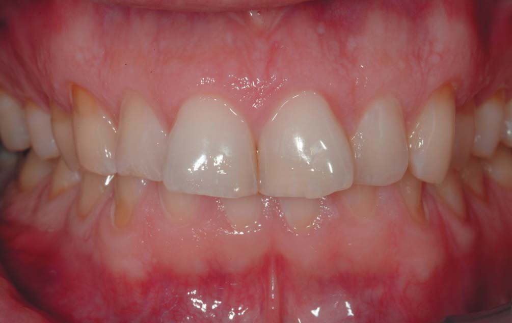
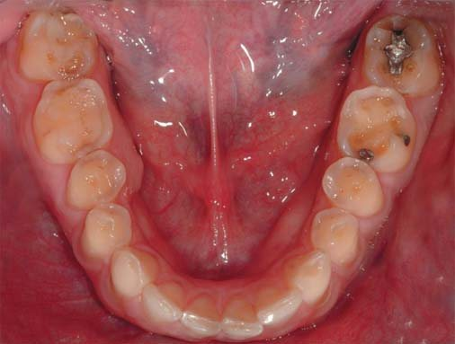
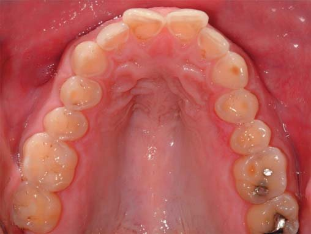
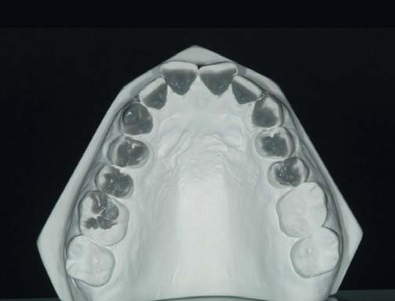
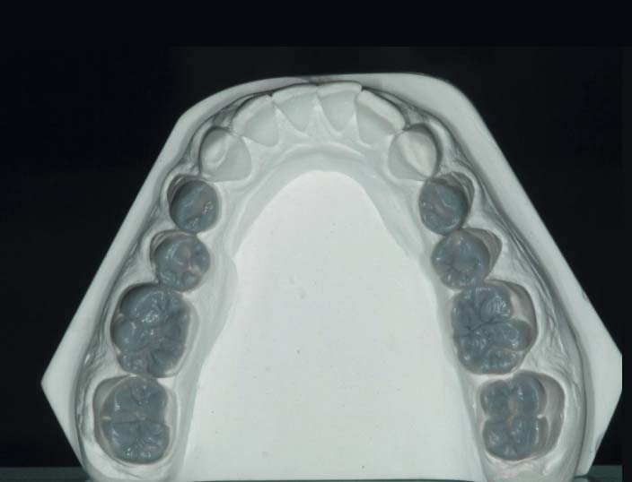
Застосування композиту в непрямій техніці
Непрямому підходу логічно надавати перевагу при потребі у більших площею реставраціях або за наявності значної деструкції твердих тканин зубів. Це також забезпечує більший контроль анатомії та оклюзії у складних випадках. Однак не слід нехтувати прямим підходом тільки через зазначені вище параметри, тому що було доведено, що оклюзія не відіграє основної ролі у виникненні парафункції.4,5,30-32 Оскільки прямі і непрямі техніки можуть застосовуватися разом для лікування одного і того ж пацієнта, при виборі непрямих реставрацій спочатку повинні бути виготовлені непрямі, в новому ВСО, а потім уже прямі композитні реставрації.
Вибір матеріалу
На сьогодні дискусії про те, в якому випадку при таких реставраціях будуть більш придатні кераміка чи композит, ґрунтуються на особистому досвіді і переконаннях, а не на наукових або клінічних даних. Досить велика клінічна література, що стосується клінічної поведінки композитних і керамічних вкладок і накладок, не засвідчила істотної переваги ні того, ні іншого матеріалу.33,34


У рамках дискусії про вибір методу реставрації автор цієї статті надає перевагу композитові в контексті стирання зубів (фото 1-17). Якщо йдеться про кераміку, то і Empress (Ivoclar Vivadent), який показав мінімальний рівень невдач,35 і звичайно ж сучасна нова прес-кераміка на основі дисилікату літію (IPS e.max Press, Ivoclar Vivadent) з поліпшеною міцністю на згинання і опором до втоми36 можуть вважатися найкращим вибором.
Нещодавно група експертів опублікувала узгоджену заяву, де вони в глобальному масштабі підтвердили обґрунтування лікування, про яке йшлося вище.37
![-14. Вигляд завершених реставрацій на верхній щелепі. До всіх нижніх і верхніх секстантів застосовувалися однакова комбінація лікування і безпрепарувальний підхід. Ці фото засвідчують, що композит служить як для пломбування існуючих порожнин, так і для відновлення ерозованих або стертих зубних тканин, створюючи кращу функцію, відновлюючи правильну анатомію та естетику і, нарешті, захищаючи ушкоджені тканини від подальшої деградації. Це ідеальний протокол лікування за помірного стирання зубів у поєднанні з невеликими порожнинами класу I і класу II.](images/diet19-016.jpg)
![-14. Вигляд завершених реставрацій на верхній щелепі. До всіх нижніх і верхніх секстантів застосовувалися однакова комбінація лікування і безпрепарувальний підхід. Ці фото засвідчують, що композит служить як для пломбування існуючих порожнин, так і для відновлення ерозованих або стертих зубних тканин, створюючи кращу функцію, відновлюючи правильну анатомію та естетику і, нарешті, захищаючи ушкоджені тканини від подальшої деградації. Це ідеальний протокол лікування за помірного стирання зубів у поєднанні з невеликими порожнинами класу I і класу II.](images/diet19-017.jpg)
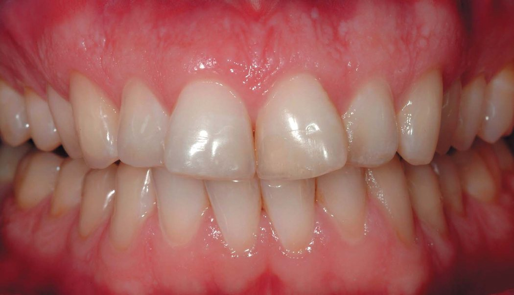
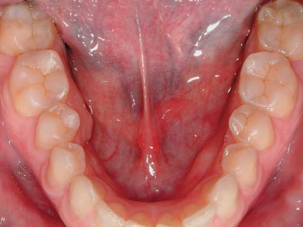
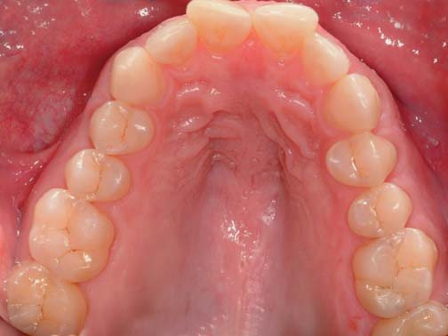
![-19. Спостереження через 5 років. Пацієнт ніколи не носив нічну захисну капу, незважаючи на те, що вона була настійно рекомендована. Ми можемо спостерігати незначне нове стирання зубів, в основному ерозивного характеру (див., наприклад, пришийкові ділянки премолярів нижньої щелепи). Однак реставрації демонструють мінімальну стертість чи втрату обєму, за винятком кількох мікровідколів по краях (у зубах 46 і 47). Нові пришийкові дефекти були відновлені простими новими прямими композитними реставраціями.](images/diet19-021.jpg)
![-19. Спостереження через 5 років. Пацієнт ніколи не носив нічну захисну капу, незважаючи на те, що вона була настійно рекомендована. Ми можемо спостерігати незначне нове стирання зубів, в основному ерозивного характеру (див., наприклад, пришийкові ділянки премолярів нижньої щелепи). Однак реставрації демонструють мінімальну стертість чи втрату обєму, за винятком кількох мікровідколів по краях (у зубах 46 і 47). Нові пришийкові дефекти були відновлені простими новими прямими композитними реставраціями.](images/diet19-022.jpg)
Довговічність реставрацій при тяжких формах стертості і ерозіях зубів
Клінічні дослідження засвідчили, що ефективність композиту при лікуванні значної стертості зубів є адекватною, а найвірогіднішим ускладненням бувають відколи. Вони можуть бути скориговані за допомогою лагодження або заміни реставрації (фото 18-28).38-40 Десятирічний рівень виживання металокерамічних коронок має трохи кращі показники у порівнянні з композитними реставраціями, але з набагато серйознішими ускладненнями: невдачі при використанні металокерамічних коронок в основному призводили до необхідності ендодонтичного лікування чи до видалення зубів, в той час як невдалі композитні реставрації чи їх поломки можуть бути або полагоджені, або замінені (фото 18-28).41 Це знову демонструє перевагу консервативного і адгезивного підходу при лікуванні всіх видів легких і помірних форм стирання та ерозій зубів.
![-22. Спостереження через 8 років. Протягом цієї трирічної перерви ситуація з носінням нічної захисної капи, на жаль, не поліпшилася, незважаючи на настійні рекомендації стоматолога. Ми також можемо спостерігати ще більше стирання зубів ерозивної і/або механічної природи (зверніть увагу на вершини горбиків в зоні зубів 46 і 36, а також на молярах верхньої щелепи). Проте захисний ефект композитних реставрацій, встановлених вісім років тому, залишається і є значною мірою позитивним з точки зору простоти лікування.](images/diet19-023.jpg)
![-22. Спостереження через 8 років. Протягом цієї трирічної перерви ситуація з носінням нічної захисної капи, на жаль, не поліпшилася, незважаючи на настійні рекомендації стоматолога. Ми також можемо спостерігати ще більше стирання зубів ерозивної і/або механічної природи (зверніть увагу на вершини горбиків в зоні зубів 46 і 36, а також на молярах верхньої щелепи). Проте захисний ефект композитних реставрацій, встановлених вісім років тому, залишається і є значною мірою позитивним з точки зору простоти лікування.](images/diet19-024.jpg)
![-22. Спостереження через 8 років. Протягом цієї трирічної перерви ситуація з носінням нічної захисної капи, на жаль, не поліпшилася, незважаючи на настійні рекомендації стоматолога. Ми також можемо спостерігати ще більше стирання зубів ерозивної і/або механічної природи (зверніть увагу на вершини горбиків в зоні зубів 46 і 36, а також на молярах верхньої щелепи). Проте захисний ефект композитних реставрацій, встановлених вісім років тому, залишається і є значною мірою позитивним з точки зору простоти лікування.](images/diet19-025.jpg)
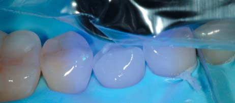
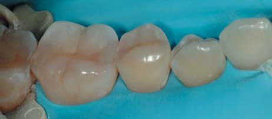
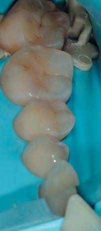
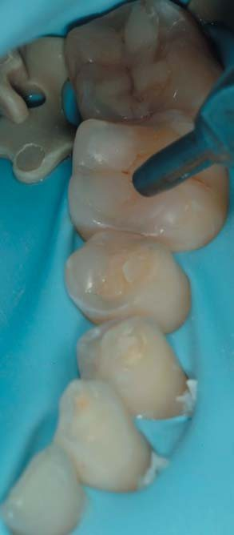
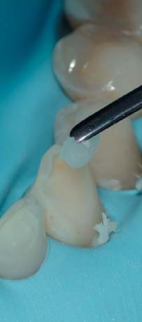
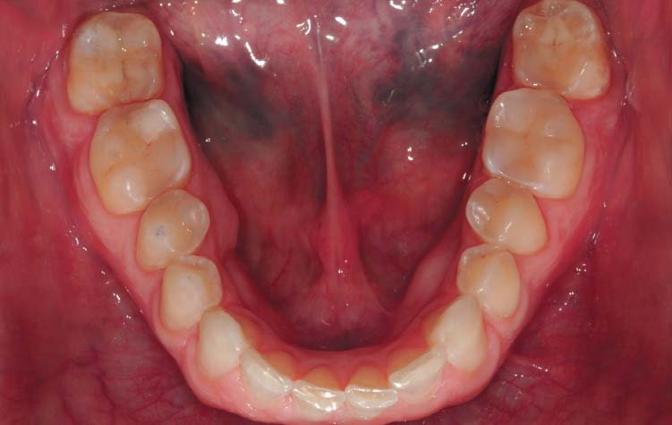
Висновки
Поширеність стирання зубів – зростаюча проблема для стоматологічної команди, яка має мультифакторне походження. Зміни в поведінці, незбалансоване харчування, різні медичні стани і лікарські засоби, що викликають кислотний рефлюкс або впливають на склад слини і слиновиділення, викликають ерозію. Крім того, досить поширеним функціональним розладом, що викликає значну абразію, є денний і нічний бруксизм. Зростає важливість діагностики ранніх ознак стирання зубів з метою виконання належних профілактичних і, за необхідності, реставраційних заходів з акцентом на біомеханіку та довготерміновий захист зубних тканин.
Подяка. Ми вдячні за внесок Сержа Ерпена (Oral Pro, Женева, Швейцарія) у виготовлення воскових моделей, зображених на фото 4 і 5.
Переклад Станіслава Гераніна
Література
- Van’t Spijker A, Rodriguez JM, Kreulen CM, Bronkhorst EM, Bartlett DW, Creugers NH. Prevalence of tooth wear in adults. Int J Prosthodont. 2009 Jan-Feb;22:35-42.
- Lussi A, Jaeggi T. Erosion – diagnosis and risk factors. Clin Oral Investig. 2008;12:S5-13.
- Litonjua LA, Andreana S, Bush PJ, Cohen RE. Tooth wear: attrition, erosion, and abrasion. Quintessence Int. 2003;34:435-446.
- Lavigne GJ, Khoury S, Abe S, Yamaguchi T, Raphael K. Bruxism physiology and pathology: an overview for clinicians. J Oral Rehabil. 2008;35:476-494.
- Lavigne GJ, Kato T, Kolta A, Sessle BJ. Neurobiological mechanisms involved in sleep bruxism. Crit Rev Oral Biol Med. 2003;14:30-46.
- Lussi A, Hellwig E, Zero D, Jaeggi T. Erosive tooth wear: diagnosis, risk factors and prevention. Am J Dent. 2006;19:319-325.
- Zero DT, Lussi A. Erosion – chemical and biological factors of importance to the dental practitioner. Int Dent J. 2005;55(Suppl 1):285-90.
- Lussi A, Jaeggi T, Zero D. The role of diet in the aetiology of dental erosion. Caries Res. 2004;38 Suppl 1:34-44.
- Mahoney EK, Kilpatrick NM. Dental erosion: part 1. Aetiology and prevalence of dental erosion. N Z Dent J. 2003;99:33-41.
- Goodacre CJ, Bernal G, Rungcharassaeng K, Kan JY. Clinical complications in fixed prosthodontics. J Prosthet Dent. 2003 Jul;90:31-41.
- Scurria MS, Bader JD, Shugars DA. Meta-analysis of fixed partial denture survival: prostheses and abutments. J Prosthet Dent. 1998 Apr;79(4):459-64.
- Ibsen RL, Ouellet DF. Restoring the worn dentition. J Esthet Dent. 1992 4:96-101.
- Christensen G. A new technique for restoration of worn anterior teeth. JADA. 1995;126:1543-1547.
- Marais JT. Restoring palatal tooth loss with composite resin, aided by increased vertical height. SADJ. 1998;53:111-9.
- Dahl B L, Krogstad O. The effect of a partial bite raising splint on the occlusal face height. An x-ray cephalometric study in human adults. Acta Odontol Scand 1982; 40: 17–24.
- Briggs PF, Bishop K, Djemal S. The clinical evolution of the ‘Dahl Principle’. Br Dent J. 1997;183:171-176.
- Gough MB, Setchell DJ. A retrospective study of 50 treatments using an appliance to produce localised occlusal space by relative axial tooth movement. Br Dent J. 1999;187:134-139.
- Saha S, Summerwill AJ. Reviewing the concept of Dahl. Dent Update. 2004;31:442-444, 446-447.
- Poyser NJ, Porter RW, Briggs PF, Chana HS, Kelleher MG. The Dahl Concept: past, present and future. Br Dent J. 2005;198:669-676.
- Satterthwaite JD. Indirect restorations on teeth with reduced crown height. Dent Update. 2006;33:210-212, 215-216.
- Cutbirth ST. Increasing vertical dimension: considerations and steps in reconstruction of the severely worn dentition. Pract Proced Aesthet Dent 2008;20:619-626.
- Robinson S, Nixon PJ, Gahan MJ, Chan MF. Techniques for restoring worn anterior teeth with direct composite resin. Dent Update. 2008;35:551-2, 555-558.
- Vailati F, Belser UC. Full-mouth adhesive rehabilitation of a severely eroded dentition: the three-step technique. Part 1. Eur J Esthet Dent. 2008;3:30-44.
- Vailati F, Belser UC. Full-mouth adhesive rehabilitation of a severely eroded dentition: the three-step technique. Part 2. Eur J Esthet Dent. 2008;3:128-146.
- Vailati F, Belser UC. Full-mouth adhesive rehabilitation of a severely eroded dentition: the three-step technique. Part 3. Eur J Esthet Dent. 2008;3:236-257.
- Kopp FR, Belser U. Aesthetik-Checkliste für den festsitzenden Zahnersatz. In: Shaerer P. Rinn LA, Kopp FR. Aesthetische Richtlinien für die reconstucktiven Zahnheilkunde. Berlin, Quintessenz Verlags; 1980: 187-192.
- Hemmings KW, Darbar UR, Vaughan S. Tooth wear treated with direct composite restorations at an increased vertical dimension: results at 30 months. J Prosthet Dent. 2000; 83:287-293.
- Bartlett D, Sundaram G. An up to 3-year randomized clinical study comparing indirect and direct resin composites used to restore worn posterior teeth. Int J Prosthodont. 2006;19:613-617.
- Gow AM, Hemmings KW. The treatment of localised anterior tooth wear with indirect Artglass restorations at an increased occlusal vertical dimension. Results after two years. Eur J Prosth. Restor Dent. 2002;10:101-105.
- Luther F. TMD and occlusion part II. Damned if we don’t? Functional occlusal problems: TMD epidemiology in a wider context. Br Dent J. 2007;202:38-39.
- Michael JA, Townsend GC, Greenwood LF, Kaidonis JA. Abfraction: separating fact from fiction. Aust Dent J. 2009;54:2-8.
- van ’t Spijker A, Kreulen CM, Creugers NH. Attrition, occlusion, (dys)function, and intervention: a systematic review. Clin Oral Implants Res. 2007;18:117-126.
- Hickel R, Manhart J. Longevity of restorations in posterior teeth and reasons for failure. J Adhes Dent. 2001;3:45-64.
- Manhart J, Chen H, Hamm G, Hickel R. Buonocore Memorial Lecture. Review of the clinical survival of direct and indirect restorations in posterior teeth of the permanent dentition. Oper Dent. 2004;29:481-508.
- El-Mowafy O, Brochu JF. Longevity and clinical performance of IPS-Empress ceramic restorations – a literature review. J Can Dent Assoc. 2002;68:233-237.
- Clausen JO, Abou Tara M, Kern M. Dynamic fatigue and fracture resistance of non retentive all-ceramic full-coverage molar restorations. Influence of ceramic material and preparation design. Dent Mater. 2010;26:533-538.
- Loomans B, Opdam N, Attin T, Bartlett D, Edelhoff D, Frankenberger R, Benic G, Ramseyer S, Wetselaar P, Sterenborg B, Hickel R, Pallesen U, Mehta S, Banerji S, Lussi A, Wilson N. Severe Tooth Wear: European Consensus Statement on Management Guidelines. J Adhes Dent. 2017;19:111-119.
- Hemmings KW, Darbar UR, Vaughan S. Tooth wear treated with direct composite restorations at an increased vertical dimension: results at 30 months. J Prosthet Dent. 2000;83:287-293.
- Redman CD, Hemmings KW, Good JA. The survival and clinical performance of resin based composite restorations used to treat localised anterior tooth wear. Brit. Dent. J 2003;194:566-572.
- Poyser NJ, Briggs PF, Chana HS, Kelleher MG, Porter RW, Patel MM. The evaluation of direct composite restorations for the worn mandibular anterior dentition — clinical performance and patient satisfaction. J Oral Rehabil. 2007;34:361-376.
- Smales RJ, Berekally TL. Long-term survival of direct and indirect restorations placed for the treatment of advanced tooth wear. Eur J Prosthodont Restor Dent. 2007;15:2-6.